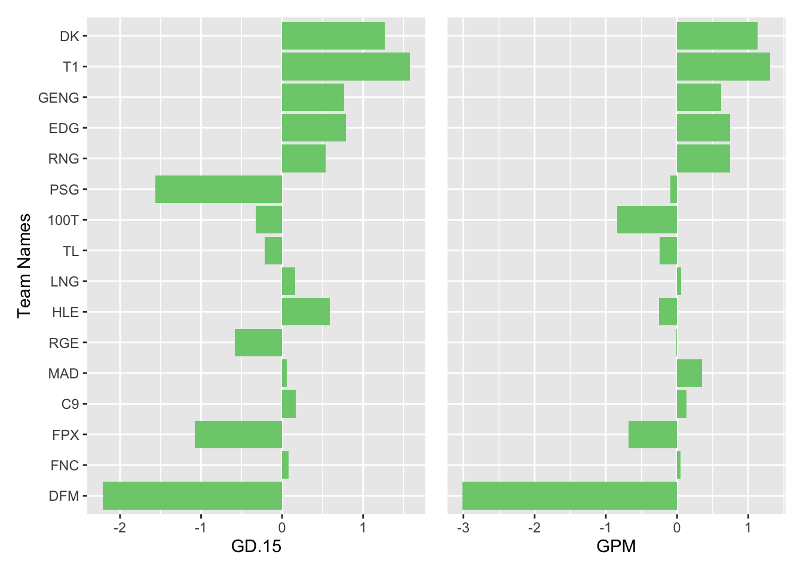
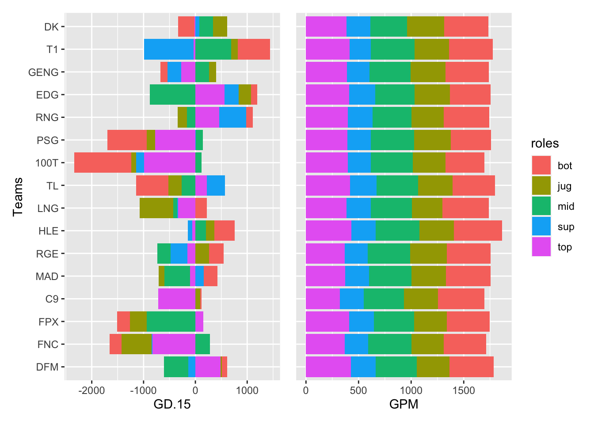
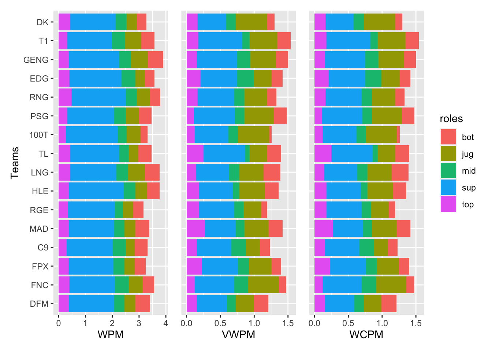
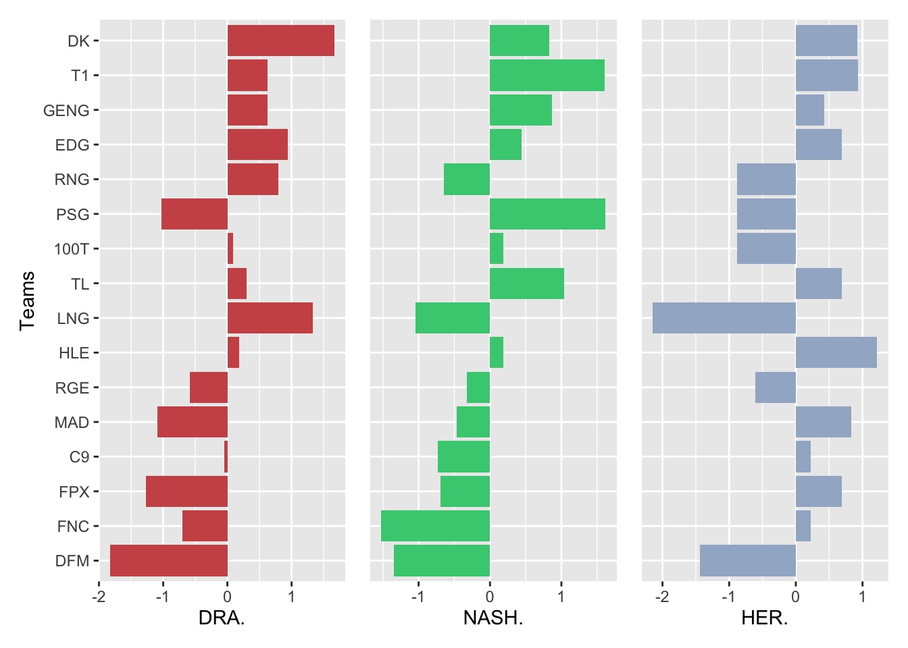
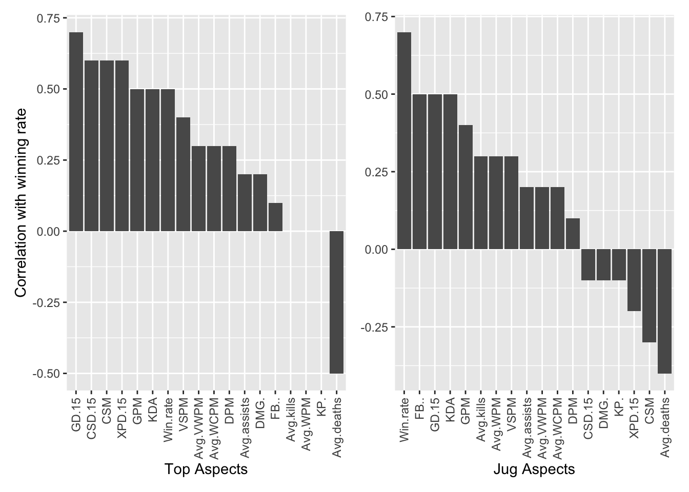
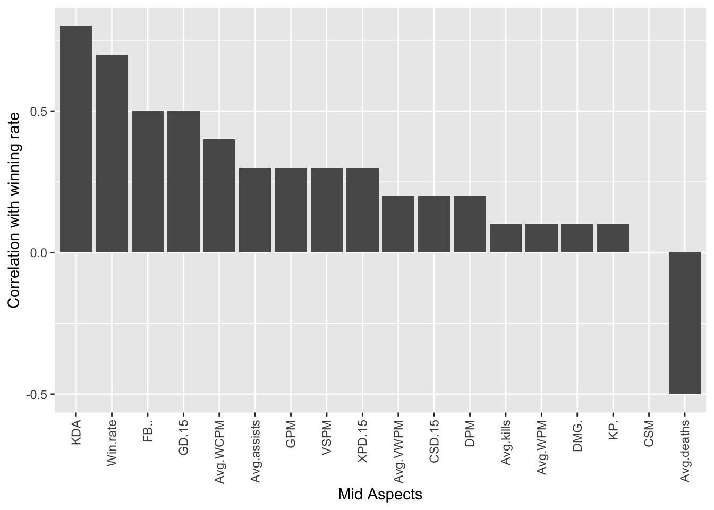

Chapter 5 Results
5.1 Influence of Gold Efficiency to Winning Rate
For this analysis, we will use
- GD.15: gold differential at 15 minutes
- GPM: gold per minute
- CSM: creeps per minute
to measure gold efficiency.

This graph is ordered by winning rates, in which top teams have higher winning rate(all bar charts below have same name order). We normalized the data for better view of some differences between each team. From the above graph, we noticed that GPM and GD.15 are very important to a team’s winning rate because teams with highest winning rate including DK, T1, GENG, EDG, RNG all have high GPM and GD.15. DFM has the lowest GPM and GD.15 so we now know why it has the lowest winning rate.

From this graph, we noticed that the contribution to team’s GD.15 of five positions does not have a common pattern for all teams. Therefore, we cannot tell which position contributes most but there are some features for some teams. For example, for teams like PSG and 100T, their GD.15 comes most from bot and top. For teams like FPX, MAD, HLE, and T1, their GD.15 comes least from jug.
On the other hand, the contribution to team’s GPM of five positions does have a common pattern for all teams. We can see that GPM comes least from sup. For rest positions, it’s about the same. We can conclude all team members are important to the team.
In general, GD.15 and GPM are really important to teams’ winning rate. Different player contributes differently to GD.15 but contributes almost same to GPM(equally important).
5.2 Influence of Vision Control to Winning Rate
For this analysis, we will use
- WPM: Wards per minute
- VWPM: Vision wards per minute
- WCPM: Wards cleared per minute
to measure vision control as described in introduction.

From the above graph, we can see that DK which has the highest winning rate controls vision very great. We also found one fact that LCK teams has the best vision control among all other teams: all four teams from Korean has positive vision scores. From these three graphs, we cannot tell vision control plays a crucial role in winning rate. However, let’s still look at the contribution to vision control of different positions.
From above graphs, we can clearly see that sup contributes most to team’s vision control in all three WPM, VWPM, and WCPM. The second is jug.
5.3 Influence of Objects Control to Winning Rate
For this analysis, we will use
- DRAPG: Dragon killed per game
- DRA.: Dragon control percent
- NASHPG: Nash Baron killed per game
- NASH.: Nash Baron control percent
- HERPG: Rift Herald killed per game
- HER.: Rift Herald control percent
to measure objects control. The reason for choosing these three monsters is that they often provoke fights between two teams. We want to know why the two teams compete for those monsters.

As a result, from the above six graphs, we can conclude that controlling more Dragons and Nash Barons is crucial in winning a game. The top 5 winning teams have high controls of Dragon and Nash Baron while the bot 5 winning teams always lose them. However, it is not obvious that controlling more Rift Herald will make one team easier to win. Teams like HLE, MAD, C9, FPX and FNC controls lots of Rift Herald but they have relatively low wining rate.
5.4 Influence of Gaming Strategy to Winning Rate
We will measure the blood degree of teams by using
- Kills…game: Kills of team per game
- Deaths…game: Deathes of team per game
- FB.: First blood rate
- Towers.killed: Towers killed per game
- Towers.lost: Towers lost per game
- FT.: First tower rate
For above variables, the higher they are, the bloody a team is

This graph is ordered by winning rate, in which left teams have higher winning rate(same for all line graphs below). From kills and deaths perspective, except FNC, all other teams have almost same kills and deaths. Additionally, their first blood rate does not differ much. Therefore, the degree of blood of different teams from this view is about the same. However, this graph shows that if one team have less deaths, they will be easier to win.
From towers killed and lost perspective, if one team has more towers killed, higher first tower rate, and less towers lost, it will have a higher winning rate. Therefore, combined with kills and deaths perspective, if a team is more defensive, which means that they have less deaths and lose less towers, they gain victory easier.
5.5 Influence of Players to Winning Rate
For this analysis, we want to know how each postion, i.e., top, jug, mid, bot, and sup influence teams’ winning rate.


From the above five graphs, we can notice that, besides gold efficiency and vision control, KDA and first blood rate is important to players. To summarize, to help team win a game, the most crucial thing for a player is to farm well and get a higher KDA. If all five players can have a better gold efficiency and higher KDA, their team is one step away from victory.
5.6 Correlation of Different Variables
After some analysis of our datasets, we conclude that
- Higher gold efficiency, better objects control, and more defensive gaming strategy will help a team win a game easier; vision control, however, doesn’t help a lot. One explanation is that every team is good at vision control so that it cannot be an indicator of winning rate. Players’ gold efficiency has direct and positive influence on team’s gold efficiency.
- Besides gold efficiency, even though vision control does not help team a lot, players should farm well and still controls it’s line’s vision to get a better wining rate.
When analyzing our datasets, we noticed some other interesting points. Let’s take a look at the following graph.
If we can have better gold efficiency, we will control more visions and kill more towers. With better vision controls and more towers killed, we will control more Dragons and more Nash Barons. As a result, we will have a higher probability to win.